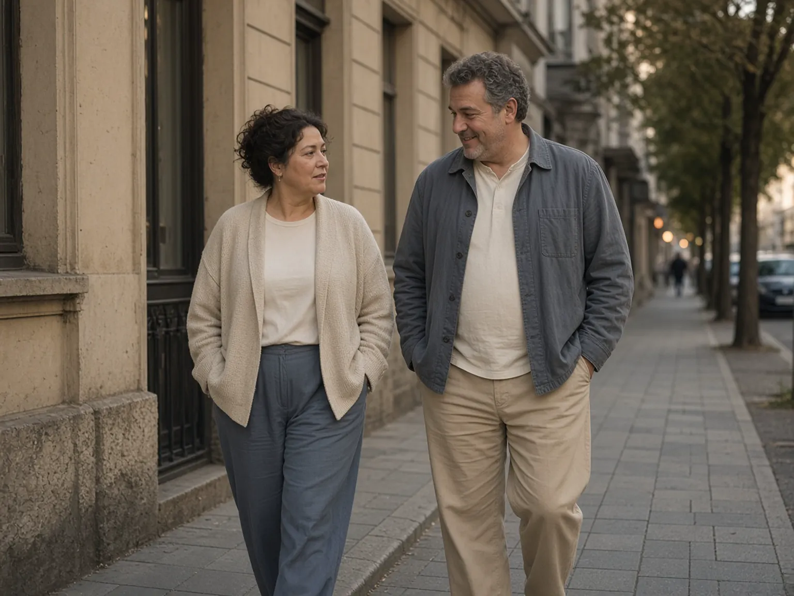
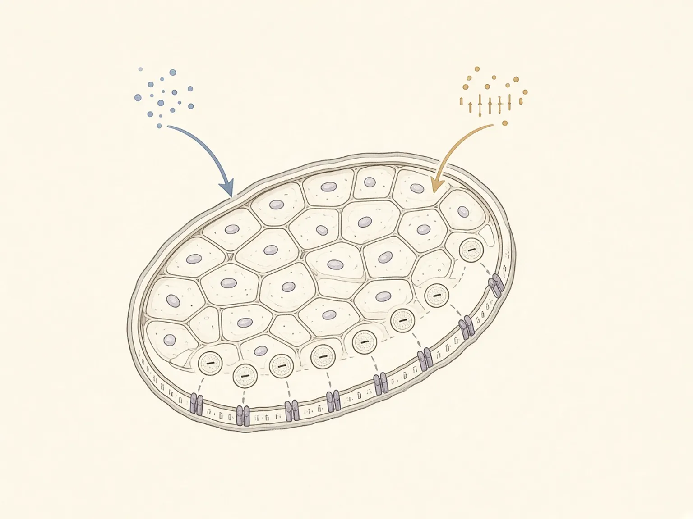
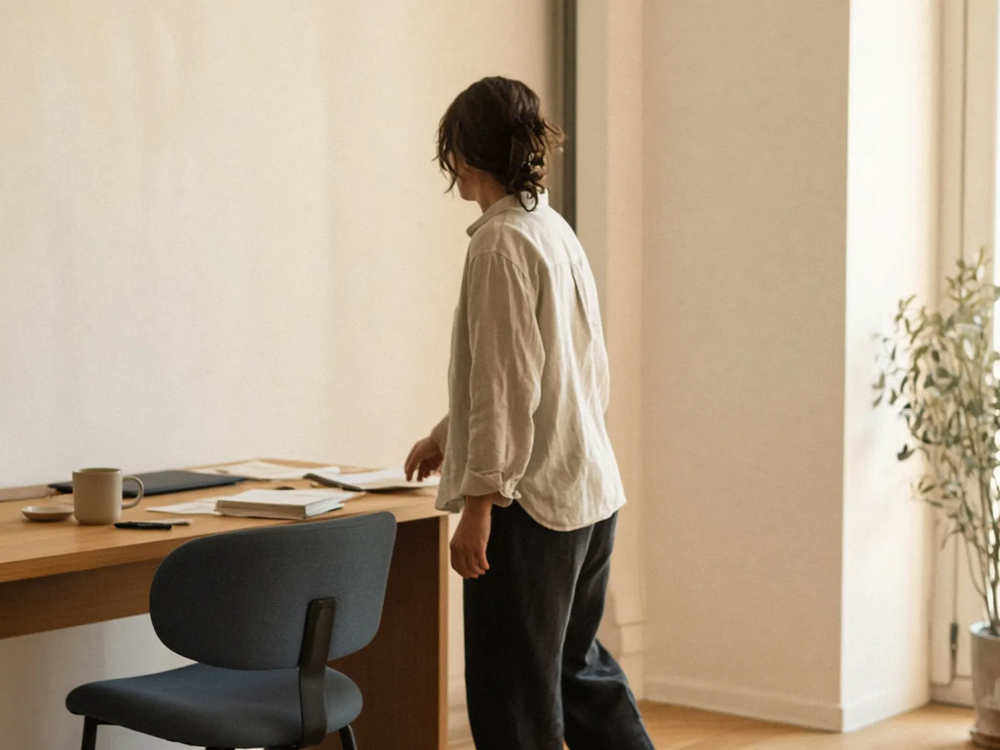
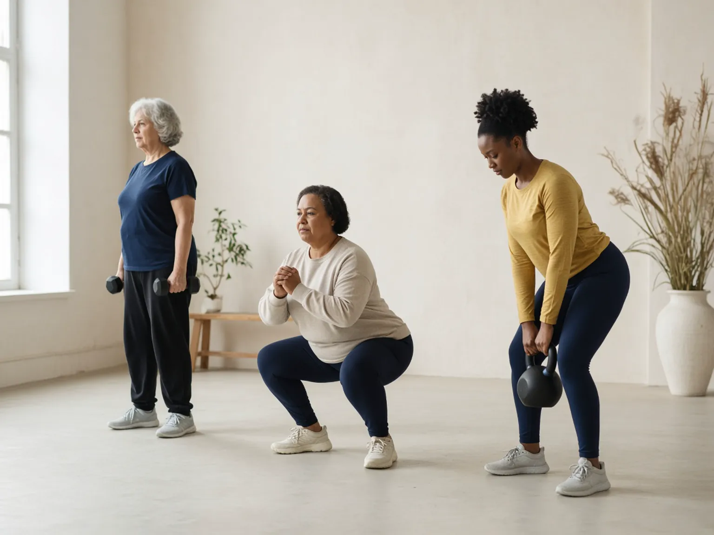

«Нет минуса на весах — тренировка зря»
Нет. Сокращение забирает глюкозу здесь и сейчас. Вес на весах смешивает воду, гликоген и жир — и запаздывает относительно обмена.
Скелетные мышцы — главный «склад» для глюкозы, когда инсулин открывает им дверь. Сокращение открывает вторую дверь — часто даже тогда, когда первая прикрыта. Поэтому движение меняет кривую сахара, не дожидаясь новой цифры на весах.
8 источников
физиология и рекомендации

Польза не равна «сжечь ужин». Мышца забирает глюкозу во время и после нагрузки — это сигнал, а не штраф за еду.
Не «сжечь», а принять
После углеводной еды инсулин тормозит выход глюкозы из печени и помогает тканям её забрать. При инсулиностимуляции именно скелетные мышцы принимают основную долю глюкозы из крови — не «жиросжигание» в рекламном смысле, а транспорт в клетку.
Если мышца отвечает слабо, поджелудочная железа компенсирует большим инсулином. Сахар в анализе ещё может выглядеть спокойно. Движение вмешивается в эту схему отдельно от веса.
Нет. Сокращение забирает глюкозу здесь и сейчас. Вес на весах смешивает воду, гликоген и жир — и запаздывает относительно обмена.
Нет. Сила, ходьба, подъём по лестнице и короткие паузы в сидении тоже включают мышечный захват глюкозы.
Нет. Эффект последней нагрузки живёт часы, не неделю. Долгое сидение — отдельный риск.
GLUT4 — транспортёр, а не «жиросжигатель»
Глюкоза не проходит через мембрану мышцы сама. Её впускает белок GLUT4, который в покое прячется внутри клетки. Инсулин через Akt и белки TBC1D4/AS160 выдвигает GLUT4 на поверхность. Сокращение делает почти то же через свою сеть: кальций, AMPK, TBC1D1 — без обязательного «разрешения» инсулина.
После еды
Сигнал с рецептора → GLUT4 на мембране. При резистентности этот путь тише.
Во время движения
Этот путь обычно сохраняется, даже когда инсулин слышат хуже.
След нагрузки
После сессии мышца ещё какое-то время охотнее берёт глюкозу — до суток-двух.
Схема, не магия
На рисунке — упрощённое волокно: слева условный сигнал инсулина, справа — сокращения. Оба подталкивают транспортёры к оболочке клетки. Это учебная метафора, не снимок биопсии.

Не один протокол на всех
Острый захват глюкозы при сокращении описан надёжно. Польза «тренированности без минуса на весах» сложнее: часть эффекта — это последняя сессия, часть — состав тела и висцеральный жир, который весы не показывают.
Обзоры в Physiological Reviews и по AMPK/TBC1D подтверждают: транспорт через GLUT4 ограничивает захват, а сокращение поднимает GLUT4 независимо от инсулина.
Стандарты ADA: ≥150 минут умеренной-интенсивной нагрузки в неделю, не больше двух дней подряд без движения, силовые 2–3 раза, сидение прерывать примерно каждые 30 минут.
Короткие прогулки после приёма пищи сглаживают постпрандиальную глюкозу. Разбивка долгого сидения ходьбой снижает гликемический ответ без «программы похудения».

Честно про вес
Контролируемые работы Росса и коллег показали: нагрузка при стабильном весе может уменьшить висцеральный жир и улучшить форму. А вот «кламп» чувствительности через несколько дней после последней тренировки без потери жира бывает скромнее, чем хочется в инфографике. Практический вывод спокойный: двигаться регулярно, не ждать весы, не обещать себе «перепрошить метаболизм одним марафоном».
Не наказание и не спортпит
Компульсивные тренировки и компенсация еды нагрузкой ближе к расстройству пищевого поведения, чем к профилактике. Мышце достаточно регулярности, не вины.
Пресс на полу не открывает GLUT4 только на животе. Глюкозу забирает работающая мышца целиком, а жировые депо регулируются системно.
На инсулине и препаратах, которые могут снижать сахар, нагрузку согласуют с врачом: гипогликемия — не признак «хорошей тренировки».
Повторяемость важнее героизма
Ниже — сжатие рекомендаций ADA и ВОЗ, а не персональный рецепт. При болезнях сердца, суставов, беременности и диабете нагрузку подбирают со специалистом.
Быстрая ходьба, велосипед, плавание — то, что можно повторять. Лучше размазать по ≥3 дням, без двух суток полной неподвижности подряд.
Свой вес, гантели, резинки. Больше мышечной массы — больше места для глюкозы в следующие дни, не только «сейчас».
Необязательно «жиросжигательная зона». Короткая прогулка часто сильнее бьёт по пику глюкозы, чем героический зал раз в неделю.
Медленная ходьба или простые приседания у стола. Это отдельно от «набрал 150 минут в субботу».

Тело любое
Коротко
После еды её в основном забирает скелетная мышца — если GLUT4 вышел на мембрану.
Сокращение открывает второй путь. Плюс короткая «память» чувствительности после сессии.
Немного почти каждый день, сила пару раз в неделю, не сидеть часами без паузы.
проверить самим
Подборка обновлена 10 сентября 2026 года.